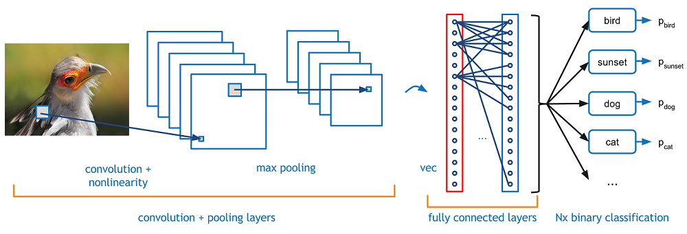
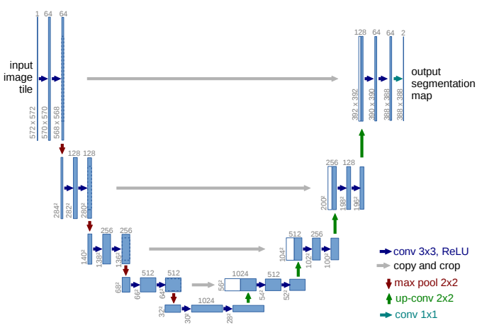

Convolutionele netwerken situeren zich in het veld van Deep Learning. Dit is een verzameling van machine learning technieken op basis van neurale netwerken. Een convolutioneel netwerk wordt gebruikt voor de klassificatie van afbeeldingen. Een bekende toepassing hiervan is het herkennen van honden en katten. We gebruiken deze toepassing daarom in deze tekst als voorbeeld om enkele belangrijke concepten toe te lichten. Later zullen we uitleggen hoe een convolutioneel netwerk kan zorgen voor de segmentatie van hersenen.
Zoals alle neurale netwerken bestaat een convolutioneel netwerk uit een opeenstapeling van verschillende lagen. Hier is de input een afbeelding. Een afbeelding kan steeds worden voorgesteld als een matrix. Elk element van deze matrix geeft dan de intensiteit van de pixel waarmee het overeenkomt. Deze matrix is de input voor een eerste convolutionele laag. Deze laag voert een convolutionele operatie uit en geeft dan een nieuwe matrix als output. Deze convolutionele operatie is niet de convolutie tussen 2 functies, maar is eigenlijk een dot product tussen twee matrices zoals je kan zien in de afbeelding hieronder. In dit voorbeeld wordt een 3x3 matrix als filter gebruikt. Deze filter begint rechts bovenaan in de input matrix en dan wordt het dot product berekend. Dit zal hoog zijn als de twee matrices op elkaar lijken en laag als ze verschillend zijn. Vervolgens schuift de 3x3 filter een plaats op en wordt opnieuw het dot product berekend. Dit gaat zo door tot de filter over de hele input matrix geschoven is. Op die manier bekomt men een nieuwe matrix die men een feature map noemt. De getallen in deze matrix geven aan hoe sterk de filter lijkt op de input matrix, en geeft zo dus weer hoe sterk deze feature voorkomt in de afbeelding.

Op de feature map die we zo bekomen kunnen we weer een convolutionele laag toepassen. Een standaard convolutioneel netwerk bevat verschillende van deze lagen. Samen hebben ze dan als functie om features te herkennen in een afbeelding. De feature map die men uiteindelijk bekomt geeft dan aan welke kenmerken te herkennen zijn in de afbeelding. In dit convolutionele deel van het netwerk komen ook enkele pooling lagen voor. In een dergelijke laag neemt men het maximum over enkele pixels om zo een nieuwe matrix van een lagere dimensie te bekomen. Stel bijvoorbeeld dat we een 8x8 feature map hebben. Een pooling laag zou dan in elk 2x2 blok van deze feature map het maximum berkenen. Zo bekomen we een 4x4 feature map.
Nadat we een map hebben van alle kenmerken die aanwezig zijn in de afbeelding kan deze invoerd worden in een fully connected laag. Deze laag zet de feature map eerst om in een vector en geeft dan als output een voorspelling voor de klassen van de afbeelding. Deze output is een vector met evenveel elementen als er klassen zijn. Elk element in deze vector geeft de kans dat de afbeelding behoort tot een bepaalde klasse. We zullen niet verder ingaan op de werking van deze fully connected lagen. De geïnteresseerde lezer verwijzen we door naar dit artikel over de multilayer perceptron dat hetzelfde soort lagen gebruikt.
De kenmerkende eigenschap van een convolutioneel netwerk is dat het netwerk zelf de matrices zal kiezen die het als filters gebruikt. Op die manier leert het netwerk zichzelf aan welke kenmerken het belangrijkst zijn om te herkennen. In het geval van het herkenning van katten en honden zal het netwerk bijvoorbeeld op zoek gaan naar kenmerken zoals poten, een staart of de kop. Bovendien zal het netwerk zich nog een hele reeks andere kenmerken aanleren die voor een mens minder duidelijk zijn, maar wel heel nuttig zijn voor de klassificatie. In de training fase krijgt het netwerk een heel groot aantal afbeeldingen te zien samen met de informatie of de afbeelding een hond is of een kat. In elke stap zal het netwerk zijn filters zo aanpassen om de volgende keer betere voorspellingen te maken. Hij optimaliseert de parameters in deze filter met behulp van gradient descent. Bij elke stap zal het netwerk een verliesfunctie berekenen die aangeeft hoe goed het netwerk presteert. In zo'n stap baseert het netwerk zich op een beperkt aantal van de volledige trainings data, dit aantal noemt men de batch size. Als men bijvoorbeeld 160 trainings afbeeldingen heeft en een batch size van 16, dan zal het netwerk na 10 stappen elke afbeelding een keer gezien hebben. Wanneer het netwerk alle afbeeldingen een keer doorlopen heeft spreekt men van een epoch. Doorgaans traint men voor 20-100 epochs, dit hangt af van het probleem.
Tot nu toe hebben we enkel netwerken besproken die een hele afbeelding klassificeren in een bepaalde klasse. Voor hersensegmentatie hebben we echter een netwerk nodig dat elke pixel in een bepaalde klasse klassificeert. Dit probleem staat bekend als semantische segmentatie. Er zijn verschillende manieren om een netwerk zoals hierboven om te vormen zodat het geschikt is voor semantische segmentatie. Wij zijn vooral geïnteresseerd in een fully convolutional network. In dit soort netwerken is er geen fully connected laag op het einde. Na een eerste reeks convolutionele en pooling lagen zal de originele input afbeelding gereduceerd zijn tot een feature map in veel lagere resolutie. Om opnieuw tot een afbeelding te komen met een hoge resolutie gebruikt men getransponeerde convolutionele lagen. In plaats van de resolutie te verlagen zullen deze net de resolutie verhogen. Op die manier komen we uit bij een afbeelding van dezelfde resolutie als de input afbeelding waar elke pixel is ingedeeld in een bepaalde klasse. Een goede introductie tot semantische segmentatie in het algemeen vindt u hier. Het fully convolutional netwerk dat ik gebruikt heb is U-net en ziet u hieronder. Het eerste been van de U is het convolutionele deel zoals in het netwerk om katten van honden te onderscheiden. Het tweede deel van het netwerk zijn lagen die de resolutie van de feature maps weer zullen verhogen. Er zijn ook enkele pijlen te zien tussen de twee benen van de U. Deze verbindingen maken het mogelijk om informatie uit de eerste lagen van het netwerk te hergebruiken.
Het eerste convolutioneel netwerk werd ontworpen door Yann LeCun in 1989 en werd gebruikt voor de herkenning van handgeschreven cijfers. In de begindagen waren convolutionele netwerken en deep learning in het algemeen niet erg populair. Dit omdat er heel veel data en rekenkracht nodig is, die in die tijd nog niet beschikbaar was. De laatste jaren is er echter gigantisch veel data beschikbaar en is de rekenkracht er ook fors op vooruitgegaan. Convolutionele netwerken wonnen aan populariteit in 2012 toen AlexNet de ImageNet competitie won. In deze jaarlijkse wedstrijd rond computer vision bestaat de taak eruit om afbeeldingen te klassificeren in 1000 klassen. Traditioneel waren er al verschillende machine learning algoritmes om dit probleem aan te pakken, maar AlexNet deed het stukken beter dan zijn competitie. Sindsdien werd de Imagenet competitie elk jaar gewonnen door steeds meer geavanceerde convolutionele netwerken. De volgende paragraaf geeft een overzicht van enkele belangrijke netwerken.
Dit netwerk heeft de hype rond convolutionele netwerken gestart. In de competitie op de ImageNet dataset won het overtuigend met een top-5 fout van 15.3 %. Dit is 10% minder dan de tweede plaats. Men spreekt van een top-5 fout als het juiste label van een afbeelding niet voorkomt in de 5 voorspelling van het netwerk met de hoogste kans. AlexNet bevat 5 convolutionele lagen en 3 fully connected lagen. Een link naar de originele paper staat hier.

Dit netwerk is gemaakt door Matt Zeiler en Rob Fergus verbonden aan NYU. Het netwerk is gebaseerd op AlexNet. In hun paper introduceren ze het concept van een deconvNet. Dit geeft voor elke laag van het netwerk de features weer waarop het getraind is. Deze paper geeft een manier om een CNN te analyseren en zo ook te verbeteren. Link naar hun artikel op ArXiv is hier .

Dit netwerk gebruikt een kleine 3x3 filter, maar dan met telkens 2 convolutionele lagen die elkaar meteen opvolgen. Dit in tegenstelling tot AlexNet met een 11x11 filter of ZFnet met een 7x7 filter. Door de kleinere filters kan het netwerk meer lagen bevatten en dus veel dieper worden. Verschillende variaties zijn voorgesteld, met 11 tot 19 convolutionele lagen. Deze worden gevolgd door 3 fully connected lagen. Het netwerk behaalt betere resultaten dan AlexNet of ZFnet. De geïnteresseerde lezer vindt de originele paper hier.

Dit netwerk introduceerde de inception module. In plaats van de lagen in serie te zetten, komen er parallele lagen. Zo kan het netwerk nog dieper worden, het netwerk bevat namelijk 22 lagen. Er is bovendien maar 1 fully connected laag in plaats van 3. Dit zorgt ervoor dat het netwerk 12 keer minder parameters heeft dan AlexNet en veel sneller getraind kan worden. De originele paper is te vinden op ArXiv.

Dit netwerk is opmerkelijk diep en heeft 152 lagen. Op de ImageNet data behaalde het een foutenpercentage van 3.6 %. Dit is minder dan het foutenpercentage van 5 % dat mensen behalen. Als men de lagen naïef opstapelt, dan leidt dit tot overfitting en een toename van het te trainen parameters. Om dit tegen te gaan kwam men met het concept van een residual block. In zo'n blok is de output de som van de output van de convolutionele laag en de input. De verbinding tussen input en output zorgt ervoor dat de gradiënt zich sneller kan terugpropageren door het netwerk. De originele paper vindt u hier.

| Netwerk | Top-5 fout |
|---|---|
| AlexNet | 15.3 % |
| ZFnet | 14.7 % |
| VGG net | 7.3 % |
| GoogLeNet | 6.7 % |
| ResNet | 3.6 % |